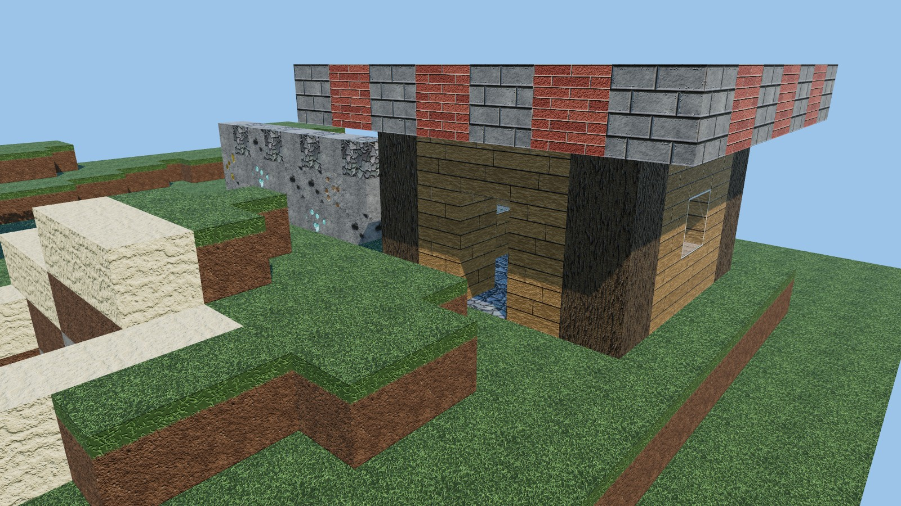
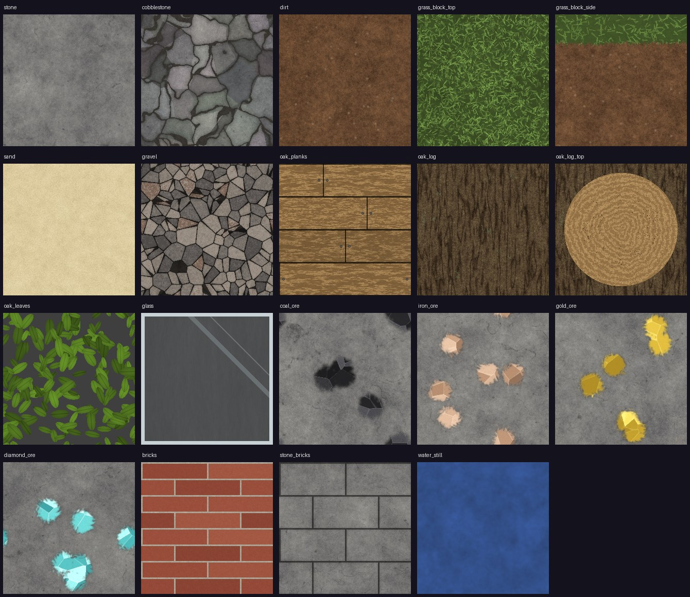

1Voraussetzungen
Der Reiter Mods ist in jedem Pro-Abo enthalten.
Egal ob aus dem Microsoft Store, dem Minecraft Launcher oder dem Xbox-App-Game-Pass – wichtig ist die Java-Version. Die Bedrock-Version (Windows-Edition, Konsole, Handy) wird nicht unterstützt.
Starte Minecraft Java einmal über den Launcher. Dabei lädt der Launcher das Java mit, das der Server braucht.
Für den ersten Download des offiziellen Servers (ca. 60 MB) direkt von Mojang.
2Einrichten – mit einem Klick
Einmalig, dauert beim ersten Mal 1–3 Minuten.
- SeriousSpawns öffnen → Reiter „Mods“ → Kachel „Minecraft (Java)“Dort auf Aktivieren drücken, falls sie noch nicht aktiv ist.
- Deinen Minecraft-Namen eintragenFeld „Dein Minecraft-Name“. Das ist dein Java-Spielername (steht im Launcher oben bzw. im Spiel über deinem Kopf) – nicht der Xbox-Gamertag. Java-Namen haben keine Leerzeichen.
- „🧱 Server automatisch erstellen“ drückenSeriousSpawns lädt den offiziellen Minecraft-Server in genau deiner Version, schaltet die Fernsteuerung (RCON) ein, installiert das SeriousSpawns-Datenpaket und startet den Server. Mit dem Klick stimmst du der Minecraft-EULA zu.
- Fertig, wenn alle drei Häkchen grün sind✔ Server-Ordner gefunden · ✔ RCON an · ✔ SeriousSpawns-Datenpaket. Ab jetzt startet SeriousSpawns den Server von selbst, sobald du es öffnest.
%LOCALAPPDATA%\SeriousSpawns\Minecraft-Server).3Ins Spiel
- Minecraft Java startenDie gleiche Version wie beim Erstellen (normalerweise einfach die neueste).
- Mehrspieler → DirektverbindungAls Serveradresse
localhosteintragen und Server betreten. - Test-Spawn schickenIn SeriousSpawns „Verbindung testen“ drücken oder im Testbereich einen Spawn auslösen – Test-Spawns tragen den Namen @seriousspawns.com.
localhost) – dann reicht künftig ein Doppelklick.4Spawns einrichten
Wie bei allen Mods: Geschenke, Likes, Follows oder Chat-Befehle legen fest, was im Spiel passiert.
Unter ⚙ Trigger & Overlay ordnest du jedem Geschenk einen Spawn zu. Ein paar Vorschläge sind schon eingestellt (z. B. Donut → TNT über dem Kopf, Parfüm → TNT-Regen, GG → Heilen). Spawns aus TikTok erscheinen rot, aus Twitch lila beschriftet – mit Name und Profilbild des Zuschauers über dem Gegner.
Klassiker neu
Helfer
5Weitere Modi
Riesen-Zombie, Turbo-Skelett, unsichtbare Spinne, teilender Creeper, Mutanten-Welle – plus Gegenmittel.
Du winzig oder riesig, Gegner winzig oder riesig – für 20–25 Sekunden.
Zuschauer bauen gemeinsam einen Boss: mehr Leben, Rüstung, Gefolge, Wut – und lassen ihn dann los.
Treibstoff schenken oder abzapfen, EMP, Fallschirm, Raketenstart.
30 Sekunden Dunkelheit, Geräusche und Schreckmomente.
Ein Block mit dem Profilbild des Zuschauers fällt vom Himmel – oder gleich ein ganzer Turm.
Pyramiden-Krieg (2–4 Streamer) Beta
Jeder Streamer verteidigt seine Pyramide, die Zuschauer greifen die Pyramiden der anderen an oder bauen Mauern und Schilde. Der Modus startet erst, wenn du „Pyramiden-Krieg starten“ drückst – bis dahin bleibt deine Welt eine ganz normale Map. „Pyramiden-Krieg beenden“ räumt wieder auf.
6Mitspieler einladen
Normalerweise ist dein Server nur für dich (localhost). Unter „Mitspieler einladen“ kannst du das ändern – gilt ab dem nächsten Serverstart.
Für Leute im selben WLAN/LAN. Einstellung „Heimnetz“ wählen, Server neu starten, dann „👥 Adresse für Mitspieler anzeigen“ – die Mitspieler geben diese Adresse (z. B.
192.168.178.20) bei Direktverbindung ein. Windows fragt beim ersten Mal, ob Java ins Netzwerk darf: Zulassen (privates Netzwerk).Für Freunde überall – ohne Router-Einstellungen, über den kostenlosen Dienst playit.gg. „🌐 playit.gg einrichten“ drücken: SeriousSpawns installiert und startet playit.gg und öffnet die Webseite. Dort einmal kostenlos anmelden, das Programm verknüpfen (Claim) und Add Tunnel → Minecraft Java wählen. Die angezeigte Adresse (z. B.
abc.joinmc.link) bei „Internet-Adresse“ eintragen – die gibst du deinen Mitspielern.7Eigenen Server nutzen (für Fortgeschrittene)
Du hast schon einen Server (Vanilla, Paper oder Spigot, Java 1.20 bis 26.x)? Dann statt „Server automatisch erstellen“ auf „Server-Ordner…“ drücken, den Ordner mit der server.properties wählen und Installieren. SeriousSpawns schaltet RCON ein und legt das Datenpaket in die Welt. Danach den Server einmal neu starten. Bei Servern auf einem anderen PC trägst du dessen Adresse bei „Server-Adresse“ ein; der RCON-Port (Standard 25575) muss erreichbar sein.
Bei „Minecraft-Version“ die passende Version wählen (wird beim automatischen Server selbst erkannt).
8Grafik & Controller
Realistischere Texturen für Gras, Stein, Holz, Ziegel und mehr – ohne Mod. Es wird nur auf Wunsch eingeschaltet: In der Minecraft-Kachel „🧱 Grafikpaket einschalten“ drücken (Minecraft vorher schließen) – oder im Spiel Optionen → Ressourcenpakete → „Serious Realism“ nach rechts schieben. „Grafikpaket ausschalten“ macht alles wieder normal.
Minecraft Java mit Controller spielen – Xbox, PlayStation und viele andere, ohne Mod. Einstellung „Controller-Paket“ auf An; wirkt, solange Minecraft im Vordergrund ist. Empfindlichkeit und Vibration sind einstellbar.


9Probleme lösen
„Verbindung fehlgeschlagen“ bei localhost
- Ist SeriousSpawns offen? Der Server läuft nur, solange SeriousSpawns läuft. Notfalls „▶ Server starten“ drücken.
- Sind in der Kachel alle drei Häkchen grün? Wenn nicht: „Server automatisch erstellen“ noch einmal drücken.
- Gleiche Version? Der Server hat die Version, die beim Erstellen installiert war. Hast du Minecraft inzwischen aktualisiert, einfach „Server automatisch erstellen“ erneut drücken – deine Welt bleibt erhalten.
- Das Start-Protokoll steht in
ss-start.logim Server-Ordner – bitte beim Fehlerbericht mitschicken.
„Kein Java gefunden“
Starte Minecraft Java einmal ganz normal über den Launcher (bis ins Hauptmenü). Dabei lädt der Launcher sein Java herunter. Danach „▶ Server starten“.
„You are not white-listed on this server“
Bitte SeriousSpawns aktualisieren und „▶ Server starten“ drücken – die Freigabeliste wird dabei automatisch ausgeschaltet.
„That player does not exist“ / Spawns kommen nicht bei mir an
Bei „Dein Minecraft-Name“ steht nicht dein Java-Spielername. Trag den Namen ein, der im Spiel über deinem Kopf steht (ohne Leerzeichen, nicht der Xbox-Gamertag). Wenn der Name stimmt, bekommst du beim Betreten automatisch Admin-Rechte.
„Verbindung testen“ meldet einen Fehler
- Der Server muss laufen und du musst im Spiel sein.
- Eigener Server: Steht in der
server.propertiesenable-rcon=true? Nach dem Installieren den Server einmal neu starten.
Freunde kommen nicht auf meinen Server
- Heimnetz: Seid ihr im selben WLAN? Hat Windows Java ins Netzwerk gelassen? (Windows-Firewall → „App durch die Firewall zulassen“ → Java „Privat“ anhaken)
- Internet: Läuft playit.gg (Symbol unten rechts)? Ist der Tunnel „Minecraft Java“ angelegt und zeigt auf
127.0.0.1:25565? - Nach dem Ändern von „Mitspieler einladen“ den Server einmal stoppen und starten.
Das Grafikpaket ist nicht zu sehen
Es ist absichtlich erst einmal aus. Minecraft schließen und in der Kachel „🧱 Grafikpaket einschalten“ drücken – oder im Spiel Optionen → Ressourcenpakete öffnen und „Serious Realism“ nach rechts (aktiv) schieben. Steht es dort rot als „inkompatibel“, SeriousSpawns aktualisieren.
Der Controller geht nicht
- Ist Minecraft in SeriousSpawns als Spiel aktiviert und „Controller-Paket“ auf An?
- Der Controller wirkt nur, solange das Minecraft-Fenster vorne ist (einmal ins Spiel klicken).
- Unter der Kachel steht, ob ein Controller erkannt wurde. Steam kann Controller „festhalten“: Steam schließen oder dort Steam Input für Minecraft ausschalten.
Es spawnen zu viele Gegner / das Spiel ruckelt
Senke „Absturzschutz: max. Mobs“ (z. B. auf 80). „Alle Klassiker-Gegner weg“ räumt sofort auf.
Die Pyramiden sind plötzlich da
Der Pyramiden-Krieg wurde gestartet. „Pyramiden-Krieg beenden“ drücken – danach ist die Welt wieder normal.
Noch Fragen? Schreib uns: seriouszocking.games@gmail.com